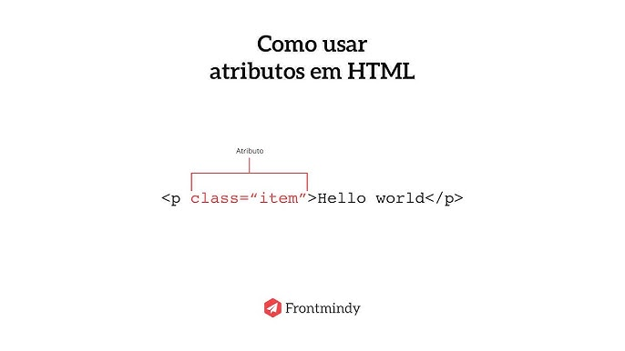
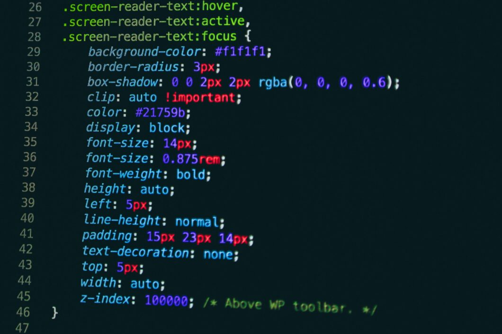
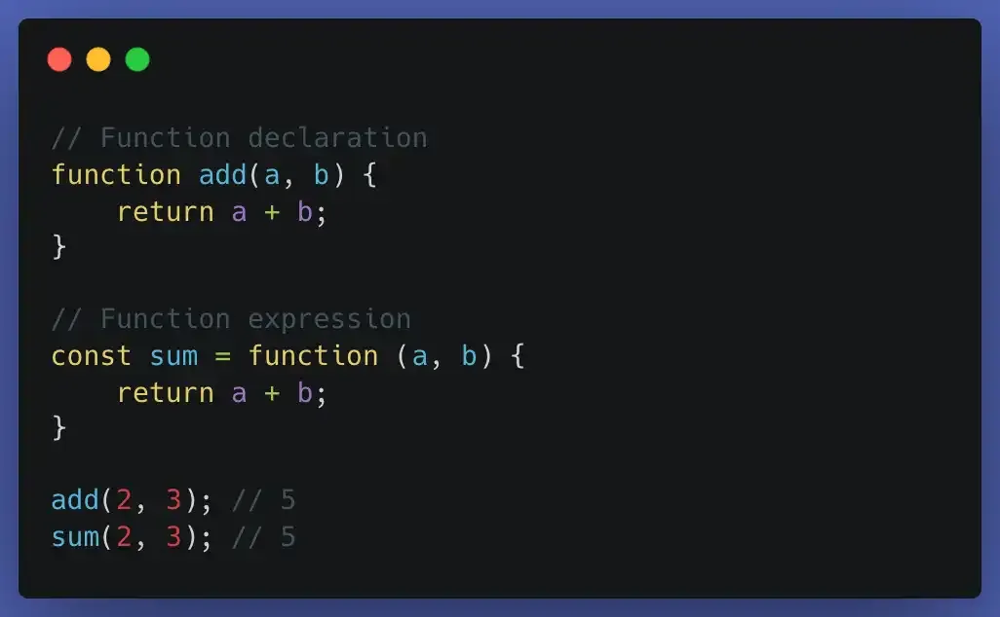

A comunicação cliente-servidor é o modelo usado na internet para troca de informações.
O cliente (como um navegador) envia uma requisição para o servidor, pedindo algum recurso, como uma página web ou dados.
O servidor processa essa solicitação e envia uma resposta de volta ao cliente.
Esse processo geralmente acontece usando o protocolo HTTP ou HTTPS.

HTML (HyperText Markup Language) é a linguagem usada para estruturar páginas da web.
Ele define os elementos do conteúdo, como títulos, parágrafos, imagens, links e tabelas, usando tags.
O HTML não é uma linguagem de programação, e sim uma linguagem de marcação, que organiza o conteúdo para que o navegador (como Chrome ou Edge) consiga exibir a página corretamente.
Normalmente, o HTML é usado junto com:
CSS → para aparência e estilo
JavaScript → para interatividade.

As tags HTML são elementos usados para marcar e estruturar o conteúdo de uma página web. Elas indicam ao navegador como cada parte da página deve ser interpretada, como títulos, parágrafos, imagens ou links.
Normalmente, as tags aparecem em pares, com uma tag de abertura e uma de fechamento, por exemplo: <p>Texto</p>. A tag de abertura inicia o elemento e a de fechamento indica onde ele termina. Algumas tags são autofechadas, como <img>.

Os atributos de tags HTML são informações adicionais que ficam dentro da tag de abertura e servem para configurar ou modificar o comportamento do elemento.
Eles geralmente aparecem no formato nome="valor". Por exemplo, no link <a href="https://site.com">, o atributo href define para qual endereço o link irá levar.
Assim, os atributos permitem controlar características dos elementos, como links, imagens, identificadores, estilos ou classes.

CSS (Cascading Style Sheets) é a linguagem usada para definir a aparência das páginas web.
Com ele é possível controlar cores, fontes, tamanhos, espaçamentos e posicionamento dos elementos HTML.
Enquanto o HTML estrutura o conteúdo, o CSS cuida do visual e do layout da página.

JavaScript é uma lingagem de programação usada para tornar as páginas web interativas e dinâmicas.
Com ele é possível criar ações como clicar em botões, validar formulários, atualizar conteúdo na tela e criar animações.
Ele funciona junto com HTML e CSS para adicionar comportamento e lógica às páginas web.
